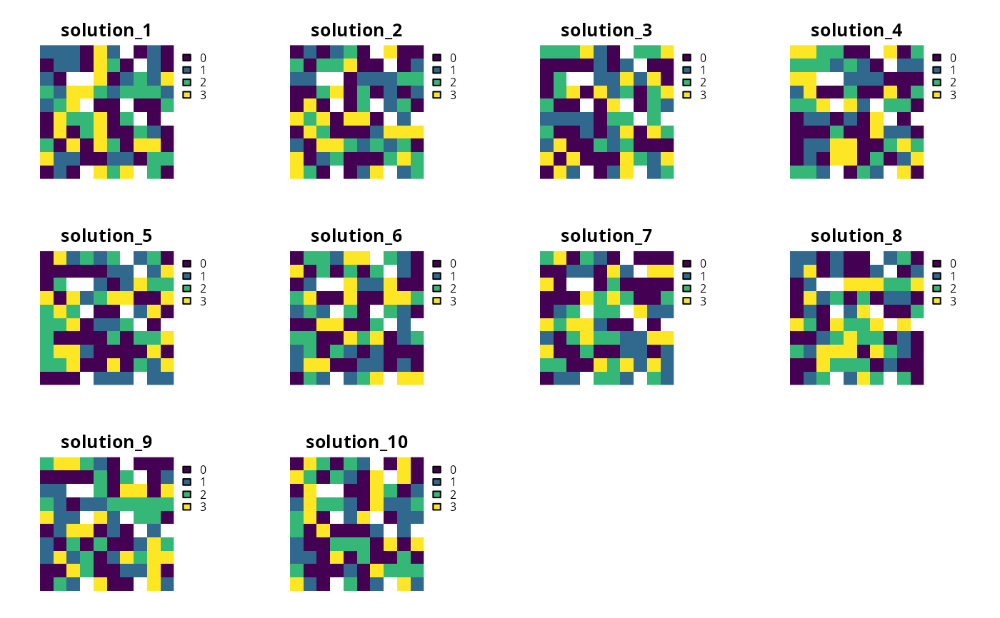

Generate a portfolio of solutions for a conservation planning
problem by randomly reordering the data prior to
solving the problem ().
add_shuffle_portfolio(x, number_solutions = 10L, threads = 1L, remove_duplicates = TRUE)
Arguments
| x |
|
|---|---|
| number_solutions |
|
| threads |
|
| remove_duplicates |
|
Value
ConservationProblem-class object with the portfolio
added to it.
Details
This strategy for generating a portfolio of solutions often results in different solutions, depending on optimality gap, but may return duplicate solutions. In general, this strategy is most effective when problems are quick to solve and multiple threads are available for solving each problem separately.
See also
Examples
# set seed for reproducibility set.seed(500) # load data data(sim_pu_raster, sim_features, sim_pu_zones_stack, sim_features_zones) # create minimal problem with shuffle portfolio p1 <- problem(sim_pu_raster, sim_features) %>% add_min_set_objective() %>% add_relative_targets(0.2) %>% add_shuffle_portfolio(10, remove_duplicates = FALSE) %>% add_default_solver(gap = 0.2, verbose = FALSE)# solve problem and generate 10 solutions within 20 % of optimality s1 <- solve(p1) # plot solutions in portfolio plot(stack(s1), axes = FALSE, box = FALSE)# build multi-zone conservation problem with shuffle portfolio p2 <- problem(sim_pu_zones_stack, sim_features_zones) %>% add_min_set_objective() %>% add_relative_targets(matrix(runif(15, 0.1, 0.2), nrow = 5, ncol = 3)) %>% add_binary_decisions() %>% add_shuffle_portfolio(10, remove_duplicates = FALSE) %>% add_default_solver(gap = 0.2, verbose = FALSE)# solve the problem s2 <- solve(p2) # print solution str(s2, max.level = 1)#> List of 10 #> $ solution_1 :Formal class 'RasterStack' [package "raster"] with 11 slots #> $ solution_2 :Formal class 'RasterStack' [package "raster"] with 11 slots #> $ solution_3 :Formal class 'RasterStack' [package "raster"] with 11 slots #> $ solution_4 :Formal class 'RasterStack' [package "raster"] with 11 slots #> $ solution_5 :Formal class 'RasterStack' [package "raster"] with 11 slots #> $ solution_6 :Formal class 'RasterStack' [package "raster"] with 11 slots #> $ solution_7 :Formal class 'RasterStack' [package "raster"] with 11 slots #> $ solution_8 :Formal class 'RasterStack' [package "raster"] with 11 slots #> $ solution_9 :Formal class 'RasterStack' [package "raster"] with 11 slots #> $ solution_10:Formal class 'RasterStack' [package "raster"] with 11 slots #> - attr(*, "objective")= Named num [1:10] 12457 11858 11641 11843 11925 ... #> ..- attr(*, "names")= chr [1:10] "solution_1" "solution_2" "solution_3" "solution_4" ... #> - attr(*, "status")= Named chr [1:10] "OPTIMAL" "OPTIMAL" "OPTIMAL" "OPTIMAL" ... #> ..- attr(*, "names")= chr [1:10] "solution_1" "solution_2" "solution_3" "solution_4" ... #> - attr(*, "runtime")= Named num [1:10] 0.00446 0.00445 0.00441 0.00442 0.00446 ... #> ..- attr(*, "names")= chr [1:10] "solution_1" "solution_2" "solution_3" "solution_4" ...# plot solutions in portfolio plot(stack(lapply(s2, category_layer)), main = "solution", axes = FALSE, box = FALSE)